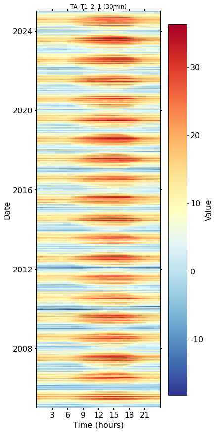
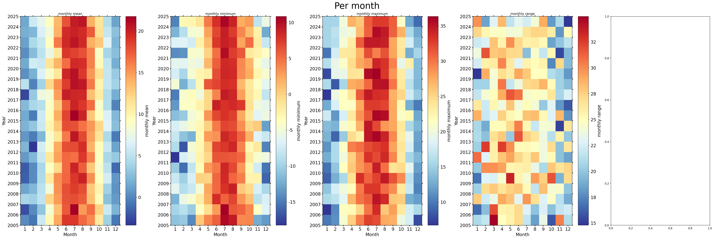
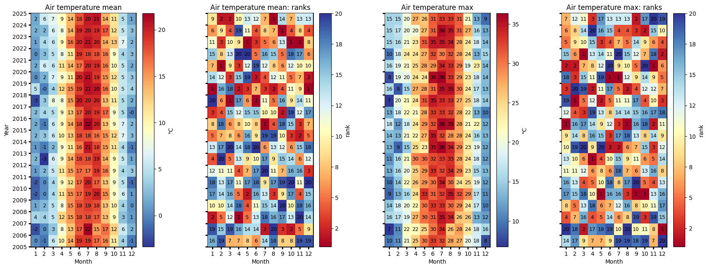
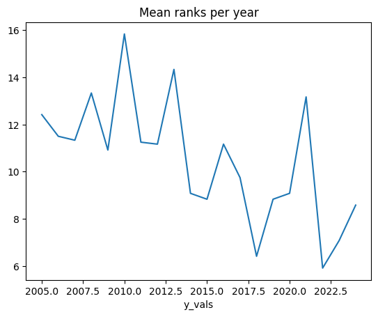
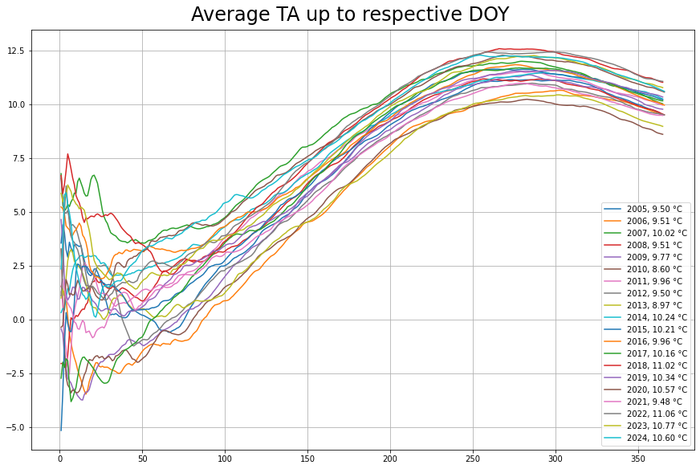

Author: Lukas Hörtnagl (holukas@ethz.ch)
Air temperature variable#
ta_col = "TA_T1_2_1"
Imports#
import diive as dv
import importlib.metadata
import warnings
from datetime import datetime
from pathlib import Path
import matplotlib.pyplot as plt
import matplotlib.gridspec as gridspec
import pandas as pd
import matplotlib.pyplot as plt
from diive.core.io.files import save_parquet, load_parquet
from diive.core.plotting.cumulative import CumulativeYear
warnings.filterwarnings(action='ignore', category=FutureWarning)
warnings.filterwarnings(action='ignore', category=UserWarning)
version_diive = importlib.metadata.version("diive")
print(f"diive version: v{version_diive}")
diive version: v0.87.0
Load data#
SOURCEDIR = r"../60_MERGE_DATA_FLUXES"
FILENAME = r"61.1_FLUXES_M10_MGMT_L4.1_NEE_LE_H_FN2O_FCH4.parquet"
FILEPATH = Path(SOURCEDIR) / FILENAME
df = load_parquet(filepath=FILEPATH)
ta = df[ta_col].copy()
Loaded .parquet file ..\60_MERGE_DATA_FLUXES\61.1_FLUXES_M10_MGMT_L4.1_NEE_LE_H_FN2O_FCH4.parquet (0.907 seconds).
--> Detected time resolution of <30 * Minutes> / 30min
List of air temperature variables#
# fluxlist = [c for c in df.columns if ("TA_" or "_TA_") in c];
# fluxlist
Plots#
Heatmap (half-hourly)#
fig, axs = plt.subplots(ncols=1, figsize=(6, 12), dpi=72, layout="constrained")
dv.heatmapdatetime(series=ta, ax=axs, cb_digits_after_comma=0).plot()

Heatmaps (monthly)#
fig, axs = plt.subplots(ncols=5, figsize=(36, 12), dpi=150, layout="constrained")
fig.suptitle(f'Per month', fontsize=32)
dv.heatmapyearmonth(series_monthly=ta.resample('M').mean(), title="monthly mean", ax=axs[0], cb_digits_after_comma=0, zlabel="monthly mean").plot()
dv.heatmapyearmonth(series_monthly=ta.resample('M').min(), title="monthly minimum", ax=axs[1], cb_digits_after_comma=0, zlabel="monthly minimum").plot()
dv.heatmapyearmonth(series_monthly=ta.resample('M').max(), title="monthly maximum", ax=axs[2], cb_digits_after_comma=0, zlabel="monthly maximum").plot()
_range = ta.resample('M').max().sub(df['TA_T1_2_1'].resample('M').min())
dv.heatmapyearmonth(series_monthly=_range, title="monthly range", ax=axs[3], cb_digits_after_comma=0, zlabel="monthly range").plot()

Heatmap ranks (monthly)#
# Figure
fig = plt.figure(facecolor='white', figsize=(17, 6))
# Gridspec for layout
gs = gridspec.GridSpec(1, 4) # rows, cols
gs.update(wspace=0.35, hspace=0.3, left=0.03, right=0.97, top=0.97, bottom=0.03)
ax_mean = fig.add_subplot(gs[0, 0])
ax_mean_ranks = fig.add_subplot(gs[0, 1])
ax_max = fig.add_subplot(gs[0, 2])
ax_max_ranks = fig.add_subplot(gs[0, 3])
params = {'axlabels_fontsize': 10, 'ticks_labelsize': 10, 'cb_labelsize': 10}
dv.heatmapyearmonth_ranks(ax=ax_mean, series=ta, agg='mean', ranks=False, zlabel="°C", cmap="RdYlBu_r", **params).plot()
hm_mean_ranks = dv.heatmapyearmonth_ranks(ax=ax_mean_ranks, series=ta, agg='mean', **params)
hm_mean_ranks.plot()
dv.heatmapyearmonth_ranks(ax=ax_max, series=ta, agg='max', ranks=False, zlabel="°C", cmap="RdYlBu_r", **params).plot()
dv.heatmapyearmonth_ranks(ax=ax_max_ranks, series=ta, agg='max', **params).plot()
ax_mean.set_title("Air temperature mean", color='black')
ax_mean_ranks.set_title("Air temperature mean: ranks", color='black')
ax_max.set_title("Air temperature max", color='black')
ax_max_ranks.set_title("Air temperature max: ranks", color='black')
ax_mean.tick_params(left=True, right=False, top=False, bottom=True,
labelleft=True, labelright=False, labeltop=False, labelbottom=True)
ax_mean_ranks.tick_params(left=True, right=False, top=False, bottom=True,
labelleft=False, labelright=False, labeltop=False, labelbottom=True)
ax_max.tick_params(left=True, right=False, top=False, bottom=True,
labelleft=False, labelright=False, labeltop=False, labelbottom=True)
ax_max_ranks.tick_params(left=True, right=False, top=False, bottom=True,
labelleft=False, labelright=False, labeltop=False, labelbottom=True)
ax_mean_ranks.set_ylabel("")
ax_max.set_ylabel("")
ax_max_ranks.set_ylabel("")
fig.show()

hm_mean_ranks.hm.get_plot_data().mean(axis=1).plot(title="Mean ranks per year");

Averages up to respective DOY#
plotdf = pd.DataFrame(ta).copy()
plotdf = plotdf.resample('D').mean()
plotdf['DOY'] = plotdf.index.date
plotdf['DOY'] = pd.to_datetime(plotdf['DOY']).dt.dayofyear
plotdf
| TA_T1_2_1 | DOY | |
|---|---|---|
| TIMESTAMP_MIDDLE | ||
| 2005-01-01 | 3.548611 | 1 |
| 2005-01-02 | 5.244444 | 2 |
| 2005-01-03 | 3.306944 | 3 |
| 2005-01-04 | 0.831250 | 4 |
| 2005-01-05 | 1.537500 | 5 |
| ... | ... | ... |
| 2024-12-27 | -1.162517 | 362 |
| 2024-12-28 | -1.746727 | 363 |
| 2024-12-29 | -1.868071 | 364 |
| 2024-12-30 | -2.201692 | 365 |
| 2024-12-31 | -2.183180 | 366 |
7305 rows × 2 columns
allyears = pd.DataFrame()
counter = 0
for year in range (2005, 2025, 1):
counter += 1
locs = plotdf.index.year == year
yeardf = plotdf[locs].copy()
yeardf['CUMSUM'] = yeardf[ta_col].cumsum()
yeardf['avg'] = yeardf['CUMSUM'].divide(yeardf['DOY'])
if counter == 1:
allyears = yeardf.copy()
else:
allyears = pd.concat([allyears, yeardf], axis=0)
fig, ax = plt.subplots(ncols=1, figsize=(12, 8), dpi=72, layout="constrained")
fig.suptitle("Average TA up to respective DOY", fontsize=24)
grouped = allyears.groupby(allyears.index.year)
for ix, groupdf in grouped:
yearlyavg = groupdf["avg"].iloc[-1]
ax.plot(groupdf["DOY"], groupdf["avg"], label=f"{ix}, {yearlyavg:.2f} °C")
# groupdf.plot()
# print(groupdf)
ax.grid()
ax.legend();

Yearly averages#
ta.resample('YE').mean()
TIMESTAMP_MIDDLE
2005-12-31 9.500346
2006-12-31 9.510808
2007-12-31 10.020665
2008-12-31 9.509768
2009-12-31 9.768376
2010-12-31 8.602752
2011-12-31 9.961233
2012-12-31 9.500586
2013-12-31 8.972617
2014-12-31 10.243456
2015-12-31 10.214341
2016-12-31 9.959387
2017-12-31 10.158153
2018-12-31 11.020365
2019-12-31 10.336325
2020-12-31 10.566112
2021-12-31 9.480925
2022-12-31 11.064683
2023-12-31 10.773193
2024-12-31 10.599748
Freq: YE-DEC, Name: TA_T1_2_1, dtype: float64
Monthly averages#
tadf = pd.DataFrame(ta)
tadf['MONTH'] = tadf.index.month
tadf['YEAR'] = tadf.index.year
monthly_avg = tadf.groupby(['YEAR', 'MONTH'])[ta_col].mean().unstack()
monthly_avg
| MONTH | 1 | 2 | 3 | 4 | 5 | 6 | 7 | 8 | 9 | 10 | 11 | 12 |
|---|---|---|---|---|---|---|---|---|---|---|---|---|
| YEAR | ||||||||||||
| 2005 | 0.210125 | -0.801339 | 5.713844 | 9.710972 | 14.313306 | 18.916042 | 18.890143 | 16.856317 | 15.635251 | 10.819029 | 3.717182 | -0.651789 |
| 2006 | -2.325830 | 0.080485 | 3.055509 | 8.319310 | 13.250669 | 17.499912 | 21.749708 | 14.987129 | 16.731619 | 12.433040 | 5.730513 | 2.035287 |
| 2007 | 4.028546 | 3.698813 | 5.171103 | 12.285550 | 14.959564 | 17.783585 | 17.990020 | 17.422618 | 13.303557 | 9.495752 | 2.811688 | 0.882221 |
| 2008 | 1.432444 | 2.281177 | 4.975142 | 8.107183 | 15.310608 | 17.852078 | 18.675324 | 17.944528 | 12.829824 | 10.133216 | 3.764944 | 0.490034 |
| 2009 | -1.625389 | 0.180946 | 4.377160 | 10.899647 | 15.477443 | 17.023732 | 18.993706 | 19.916496 | 15.428819 | 9.176833 | 6.090314 | 0.687469 |
| 2010 | -1.816758 | 0.199619 | 4.099154 | 9.068338 | 11.873036 | 16.897946 | 19.849270 | 17.293014 | 12.834795 | 8.677442 | 5.026717 | -1.278987 |
| 2011 | 0.892078 | 2.255540 | 5.476857 | 11.008608 | 14.657345 | 16.901711 | 16.594692 | 18.906124 | 15.817371 | 9.197266 | 4.117070 | 3.222475 |
| 2012 | 2.219987 | -3.364431 | 6.058907 | 8.741281 | 14.288917 | 17.940666 | 18.116941 | 19.327690 | 13.941950 | 9.350884 | 5.471329 | 1.343973 |
| 2013 | 0.716500 | -0.510813 | 2.303841 | 8.682419 | 11.226284 | 16.235882 | 20.530431 | 18.248934 | 14.630326 | 11.306503 | 4.210245 | -0.573077 |
| 2014 | 2.091937 | 3.128287 | 5.613430 | 10.028926 | 12.870555 | 17.967155 | 17.843781 | 16.464852 | 15.091786 | 12.061521 | 6.657980 | 2.695666 |
| 2015 | 1.596828 | -0.514620 | 5.819505 | 9.362186 | 14.146480 | 18.346357 | 21.759891 | 19.864031 | 13.115153 | 9.281210 | 6.546627 | 2.420249 |
| 2016 | 2.484183 | 4.107598 | 4.715634 | 8.994764 | 12.895846 | 17.391673 | 19.833336 | 18.962105 | 16.802195 | 8.680793 | 4.660996 | -0.135555 |
| 2017 | -2.624498 | 3.283107 | 7.756242 | 8.240388 | 14.695983 | 20.176124 | 19.771637 | 19.692754 | 13.370492 | 10.757406 | 4.554422 | 1.742608 |
| 2018 | 4.936138 | -0.190323 | 3.849562 | 12.070434 | 15.426589 | 18.690051 | 20.834856 | 20.433843 | 16.170283 | 9.997433 | 5.370321 | 3.835440 |
| 2019 | 0.418184 | 1.984079 | 6.500643 | 8.652861 | 11.158806 | 19.701160 | 20.789025 | 18.818713 | 15.077914 | 11.575566 | 5.422591 | 3.370313 |
| 2020 | 1.635296 | 5.970656 | 5.577609 | 11.320013 | 13.814061 | 16.748215 | 19.583089 | 19.363624 | 15.937522 | 9.684012 | 5.287703 | 1.801799 |
| 2021 | 0.320515 | 2.558160 | 5.011026 | 7.622137 | 11.139938 | 18.945016 | 18.465003 | 17.840879 | 15.945695 | 8.839891 | 4.002620 | 2.687427 |
| 2022 | 1.159756 | 4.287937 | 5.527706 | 9.227786 | 16.238983 | 19.602645 | 20.641075 | 19.633025 | 14.191446 | 12.902621 | 6.668936 | 2.213690 |
| 2023 | 1.870183 | 2.294506 | 6.381045 | 8.082595 | 13.966407 | 19.479169 | 19.940537 | 19.474791 | 17.366343 | 11.646145 | 5.410159 | 2.779639 |
| 2024 | 1.536044 | 5.813781 | 7.137185 | 9.100171 | 13.630944 | 17.819154 | 20.193731 | 20.654355 | 14.015072 | 11.196474 | 4.607912 | 1.284772 |
Monthly averages: ranks#
# Calculate ranks per month
monthly_avg_ranked = monthly_avg.copy() # Create a copy to avoid modifying the original
def rank_monthly_averages(col):
return col.rank(method='dense', ascending=False)
monthly_avg_ranked = monthly_avg_ranked.apply(rank_monthly_averages, axis=0)
monthly_avg_ranked
| MONTH | 1 | 2 | 3 | 4 | 5 | 6 | 7 | 8 | 9 | 10 | 11 | 12 |
|---|---|---|---|---|---|---|---|---|---|---|---|---|
| YEAR | ||||||||||||
| 2005 | 16.0 | 19.0 | 7.0 | 7.0 | 8.0 | 6.0 | 14.0 | 18.0 | 8.0 | 8.0 | 19.0 | 19.0 |
| 2006 | 19.0 | 15.0 | 19.0 | 16.0 | 14.0 | 14.0 | 2.0 | 20.0 | 3.0 | 2.0 | 5.0 | 9.0 |
| 2007 | 2.0 | 5.0 | 12.0 | 1.0 | 5.0 | 13.0 | 18.0 | 16.0 | 17.0 | 13.0 | 20.0 | 14.0 |
| 2008 | 10.0 | 10.0 | 14.0 | 18.0 | 4.0 | 11.0 | 15.0 | 14.0 | 20.0 | 10.0 | 18.0 | 16.0 |
| 2009 | 17.0 | 14.0 | 16.0 | 5.0 | 2.0 | 16.0 | 13.0 | 3.0 | 9.0 | 17.0 | 4.0 | 15.0 |
| 2010 | 18.0 | 13.0 | 17.0 | 11.0 | 17.0 | 18.0 | 9.0 | 17.0 | 19.0 | 20.0 | 11.0 | 20.0 |
| 2011 | 12.0 | 11.0 | 11.0 | 4.0 | 7.0 | 17.0 | 20.0 | 11.0 | 7.0 | 16.0 | 16.0 | 3.0 |
| 2012 | 4.0 | 20.0 | 5.0 | 13.0 | 9.0 | 10.0 | 17.0 | 9.0 | 15.0 | 14.0 | 6.0 | 12.0 |
| 2013 | 13.0 | 17.0 | 20.0 | 14.0 | 18.0 | 20.0 | 6.0 | 13.0 | 12.0 | 6.0 | 15.0 | 18.0 |
| 2014 | 5.0 | 7.0 | 8.0 | 6.0 | 16.0 | 9.0 | 19.0 | 19.0 | 10.0 | 3.0 | 2.0 | 5.0 |
| 2015 | 8.0 | 18.0 | 6.0 | 8.0 | 10.0 | 8.0 | 1.0 | 4.0 | 18.0 | 15.0 | 3.0 | 7.0 |
| 2016 | 3.0 | 4.0 | 15.0 | 12.0 | 15.0 | 15.0 | 10.0 | 10.0 | 2.0 | 19.0 | 12.0 | 17.0 |
| 2017 | 20.0 | 6.0 | 1.0 | 17.0 | 6.0 | 1.0 | 11.0 | 5.0 | 16.0 | 9.0 | 14.0 | 11.0 |
| 2018 | 1.0 | 16.0 | 18.0 | 2.0 | 3.0 | 7.0 | 3.0 | 2.0 | 4.0 | 11.0 | 9.0 | 1.0 |
| 2019 | 14.0 | 12.0 | 3.0 | 15.0 | 19.0 | 2.0 | 4.0 | 12.0 | 11.0 | 5.0 | 7.0 | 2.0 |
| 2020 | 7.0 | 1.0 | 9.0 | 3.0 | 12.0 | 19.0 | 12.0 | 8.0 | 6.0 | 12.0 | 10.0 | 10.0 |
| 2021 | 15.0 | 8.0 | 13.0 | 20.0 | 20.0 | 5.0 | 16.0 | 15.0 | 5.0 | 18.0 | 17.0 | 6.0 |
| 2022 | 11.0 | 3.0 | 10.0 | 9.0 | 1.0 | 3.0 | 5.0 | 6.0 | 13.0 | 1.0 | 1.0 | 8.0 |
| 2023 | 6.0 | 9.0 | 4.0 | 19.0 | 11.0 | 4.0 | 8.0 | 7.0 | 1.0 | 4.0 | 8.0 | 4.0 |
| 2024 | 9.0 | 2.0 | 2.0 | 10.0 | 13.0 | 12.0 | 7.0 | 1.0 | 14.0 | 7.0 | 13.0 | 13.0 |
Mean ranks per year#
monthly_avg_ranked.mean(axis=1)
YEAR
2005 12.416667
2006 11.500000
2007 11.333333
2008 13.333333
2009 10.916667
2010 15.833333
2011 11.250000
2012 11.166667
2013 14.333333
2014 9.083333
2015 8.833333
2016 11.166667
2017 9.750000
2018 6.416667
2019 8.833333
2020 9.083333
2021 13.166667
2022 5.916667
2023 7.083333
2024 8.583333
dtype: float64
Number of days below 0°C#
ta = "TA_T1_2_1"
plotdf = df[[ta]].copy()
plotdf = plotdf.resample('D').min()
belowzero = plotdf.loc[plotdf[ta] < 0].copy()
belowzero = belowzero.groupby(belowzero.index.year).count()
belowzero["YEAR"] = belowzero.index
belowzero
belowzero.plot.bar(x="YEAR", y=ta, title="Number of days with TA < 0°");
display(belowzero)
print(f"Average per year: {belowzero[ta].mean()} +/- {belowzero[ta].std():.2f} SD")
| TA_T1_2_1 | YEAR | |
|---|---|---|
| TIMESTAMP_MIDDLE | ||
| 2005 | 94 | 2005 |
| 2006 | 107 | 2006 |
| 2007 | 100 | 2007 |
| 2008 | 112 | 2008 |
| 2009 | 107 | 2009 |
| 2010 | 118 | 2010 |
| 2011 | 98 | 2011 |
| 2012 | 100 | 2012 |
| 2013 | 113 | 2013 |
| 2014 | 78 | 2014 |
| 2015 | 97 | 2015 |
| 2016 | 96 | 2016 |
| 2017 | 102 | 2017 |
| 2018 | 81 | 2018 |
| 2019 | 96 | 2019 |
| 2020 | 88 | 2020 |
| 2021 | 104 | 2021 |
| 2022 | 91 | 2022 |
| 2023 | 91 | 2023 |
| 2024 | 85 | 2024 |
Average per year: 97.9 +/- 10.57 SD

Number of days above 30°C#
ta = "TA_T1_2_1"
plotdf = df[[ta]].copy()
plotdf = plotdf.resample('D').max()
above = plotdf.loc[plotdf[ta] > 30].copy()
above = above.groupby(above.index.year).count()
above["YEAR"] = above.index
above.plot.bar(x="YEAR", y=ta, title="Number of days with TA > 30°");
display(above)
print(f"Average per year: {above[ta].mean()} +/- {above[ta].std():.2f} SD")
| TA_T1_2_1 | YEAR | |
|---|---|---|
| TIMESTAMP_MIDDLE | ||
| 2005 | 8 | 2005 |
| 2006 | 17 | 2006 |
| 2007 | 9 | 2007 |
| 2008 | 12 | 2008 |
| 2009 | 18 | 2009 |
| 2010 | 14 | 2010 |
| 2011 | 10 | 2011 |
| 2012 | 13 | 2012 |
| 2013 | 14 | 2013 |
| 2014 | 8 | 2014 |
| 2015 | 30 | 2015 |
| 2016 | 11 | 2016 |
| 2017 | 28 | 2017 |
| 2018 | 26 | 2018 |
| 2019 | 21 | 2019 |
| 2020 | 15 | 2020 |
| 2021 | 9 | 2021 |
| 2022 | 22 | 2022 |
| 2023 | 24 | 2023 |
| 2024 | 20 | 2024 |
Average per year: 16.45 +/- 6.89 SD

End of notebook#
dt_string = datetime.now().strftime("%Y-%m-%d %H:%M:%S")
print(f"Finished. {dt_string}")
Finished. 2025-03-21 17:53:42